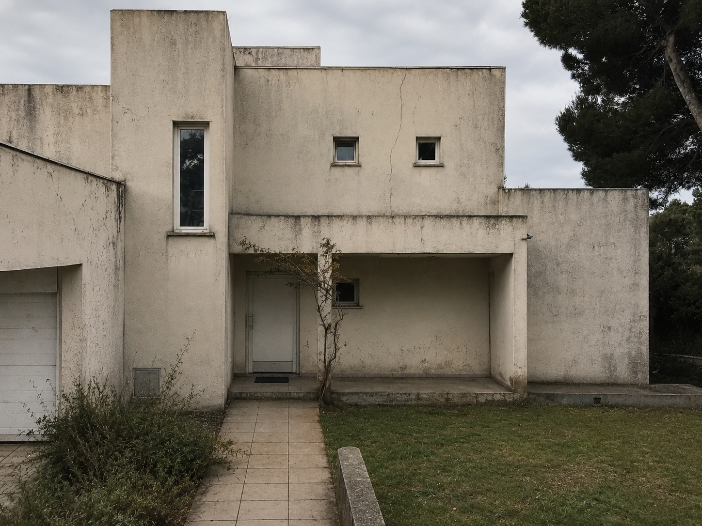

18 ans de métier
Installée en 2008 à Vallons-de-l'Erdre, l'entreprise connaît le bâti du nord-est 44 : schiste, vieilles fermes, maisons des années 70.
Maçon depuis 2008 · Loire-Atlantique
Gros œuvre, extension, ravalement et pierre naturelle — au nord-est de la Loire-Atlantique.
Ce qu'on fait
Du terrassement à la finition, Sébastien et Mathieu mènent le chantier de bout en bout dans le pays d'Ancenis et le castelbriantais.
Fondations, parpaing, chaînage, dalle béton et ouvertures. La structure qui tient trente ans.
En savoir plus →Agrandir la maison sans la dénaturer : parpaing ou pierre, dalle et raccord propre à l'existant.
En savoir plus →Enduit à la chaux, finition projetée ou talochée. Une façade saine et qui respire.
En savoir plus →Murs de schiste, restauration et rejointoiement à l'ancienne, dans le respect du bâti local.
En savoir plus →Pourquoi nous confier votre chantier
Installée en 2008 à Vallons-de-l'Erdre, l'entreprise connaît le bâti du nord-est 44 : schiste, vieilles fermes, maisons des années 70.
Maçonnerie courante certifiée, garantie décennale et Capeb 44. Sur un chantier à plusieurs dizaines de milliers d'euros, ça compte.
Un devis détaillé, un planning annoncé, un chantier rangé chaque soir. Vous savez où va chaque euro et chaque semaine.
Avant / après
Un ravalement à la chaux récent à Joué-sur-Erdre. Quatre autres chantiers sont à voir sur la page Réalisations.


Ce qu'en disent les clients
« Devis clair, planning tenu, chantier propre. L'extension est sortie en six semaines, comme annoncé. »
« Sébastien a remonté notre mur en pierre à l'identique. On ne voit pas la reprise. »
« Ravalement à la chaux impeccable, équipe ponctuelle et soigneuse. À recommander. »
Décrivez votre chantier à Sébastien : il revient vers vous sous 48 h avec un premier retour, dans toute la Loire-Atlantique nord-est.